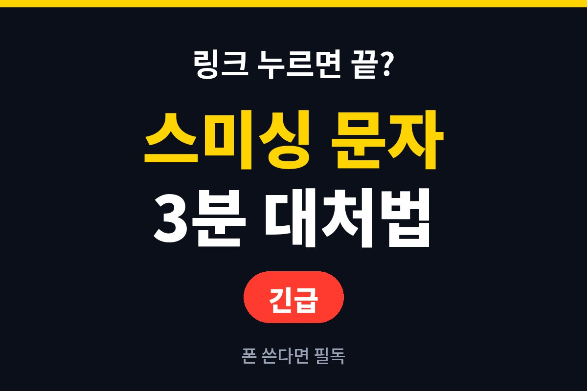
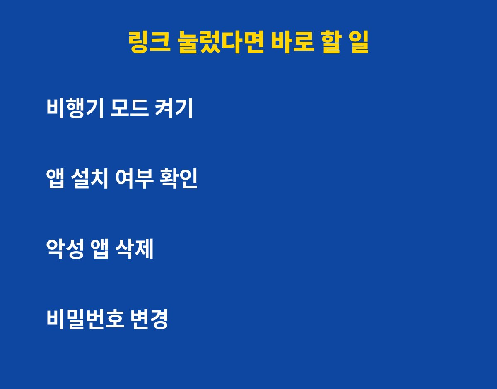
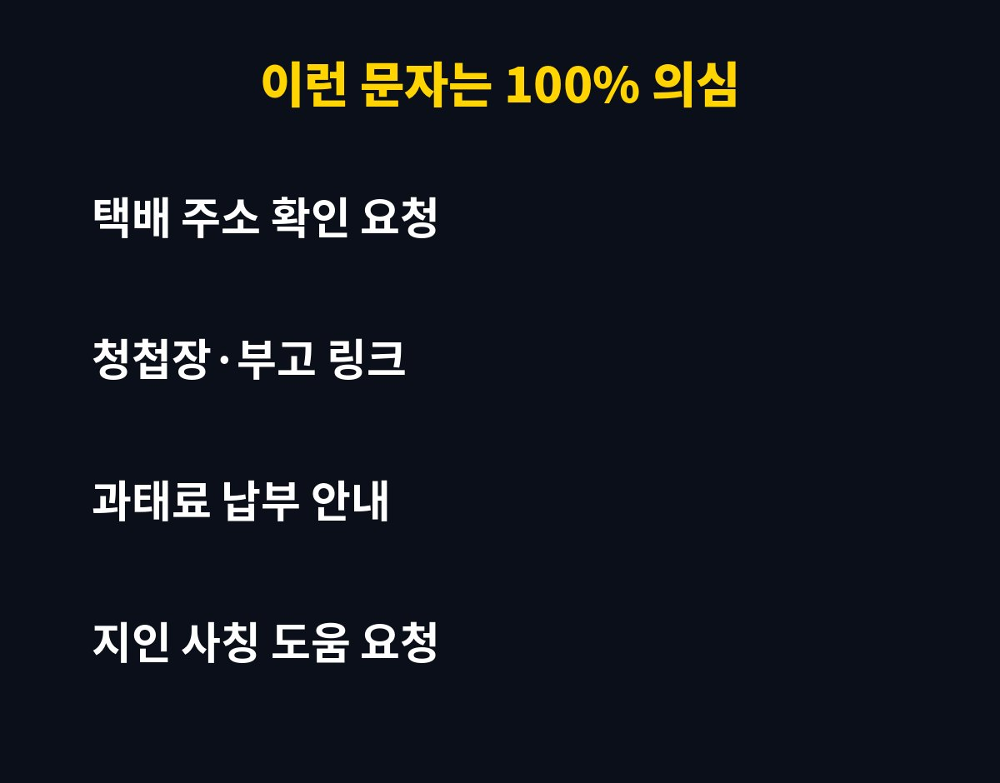

스미싱 문자 링크를 눌렀다면, 지금 당장 폰에서 해야 할 순서가 있어요. 스마트폰 쓰는 분이라면 누구나 당할 수 있는데, 첫 3분을 어떻게 쓰느냐에 따라 피해가 갈리는 이유를 알려드릴게요.
링크를 누르는 것만으로 바로 털리는 경우는 많지 않아요. 진짜 위험한 건 그 뒤에 나오는 "앱 설치", "보안 업데이트", "본인 확인" 같은 안내를 따라 할 때예요.
그래서 눌렀더라도 아무것도 설치하지 않고 닫았다면 한숨 돌려도 됩니다. 다만 확인은 꼭 해야 해요.
먼저 비행기 모드를 켜서 외부 통신을 끊으세요. 그다음 설정에서 최근 설치된 앱을 확인하고, 모르는 앱이 있으면 바로 삭제해요.
이미 앱을 설치했거나 개인정보를 입력했다면 은행·카드 앱의 비밀번호부터 다른 기기에서 바꾸는 게 우선이에요. 필요하면 통신사나 금융사 고객센터에 지급정지를 요청하세요.

택배 주소 확인, 청첩장·부고, 과태료 안내, 지인 사칭 도움 요청이 대표적이에요. 공통점은 "지금 안 누르면 손해일 것 같은 급한 느낌"을 준다는 거예요.
| 상황 | 바로 할 일 |
|---|---|
| 링크만 누르고 닫음 | 설치 앱 확인, 백신 검사 |
| 앱을 설치함 | 비행기 모드, 앱 삭제, 비밀번호 변경 |
| 정보를 입력함 | 금융사 연락, 지급정지 요청 |
스마트폰 설정에서 "출처를 알 수 없는 앱 설치"를 꺼두세요. 이것만으로도 악성 앱이 깔릴 길이 크게 막혀요.

또 문자 속 링크는 누르지 말고, 택배나 기관은 공식 앱이나 직접 검색한 사이트에서 확인하는 습관을 들이세요. 의심되면 문자 스팸 신고 기능도 활용해 보세요.
도움이 되셨다면 구독하고 다음 보안 소식도 받아보세요.
기사·공식 발표 기준이며 출시·가격 정보는 바뀔 수 있어요.